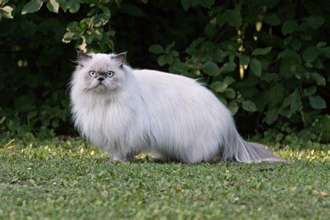

Top 3 Cats to Own
Are you in the market for a feline companion but not sure which breed to choose? Look no further! In this article, we've compiled a list of the top three cats to own based on their temperament, health, and overall popularity. From affectionate Ragdolls to playful Maine Coons and elegant Persians, we've got you covered. Whether you're a first-time cat owner or a seasoned pro, these breeds are sure to make great additions to your household. So sit back, relax, and discover which cat is the purr-fect match for you!

1. Maine Coon
A Maine Coon is a breed of domestic cat known for its large size, muscular build, and long, thick fur. They are native to the state of Maine in the United States and are considered to be one of the oldest natural breeds of cats in North America. They have distinctive features such as their long, tufted ears, large expressive eyes, and long, bushy tails. So what are the pros and cons of such breeds?
Pros:
- Often referred to as "gentle giants"
- Very sociable
- Very friendly personality
- High intelligence
Cons:
- Frequently shed
- Frequent grooming required
- Expensive to purchase
- Very large so require large moving space

2. Ragdoll
A Ragdoll cat is a breed of domestic cat known for its large size, silky fur, and docile temperament. They were developed in the 1960s in California, USA, by a breeder named Ann Baker, and are named for their tendency to go limp and relaxed when held, like a ragdoll. Ragdolls have distinctive blue eyes and come in a variety of colors, including seal, chocolate, blue, lilac, and red. They are known for their affectionate and gentle nature, making them popular as family pets. Ragdolls are a muscular and large breed, with males weighing between 12 and 20 pounds and females weighing between 8 and 15 pounds. They have a semi-long, soft coat.
Pros:
- Gentle and docile temperament
- Soft and silky fur that is pleasant to touch
- Known to be low maintenance in terms of grooming
- Playful nature
Cons:
- Expensive to purchase
- Frequent shedding so regular cleaning of the house required
- Require frequent attention to prevent boredom and destructiveness
- Not suitable for owners who prefer an independant cat

3. Persian
A Persian cat is a breed of domestic cat that is known for its long, luxurious coat, round face, and sweet personality. The breed is believed to have originated in Persia (modern-day Iran) and was introduced to Europe in the 1600s. Persian cats come in a variety of colors and patterns, including solid colors, tabby, and bicolor. They have a broad head with large, round eyes and a short, snub nose.
Pros:
- Affectionate and calm temperament
- Attractive and luxurious coat that is pleasant to touch
- Generally good with children and other pets
- Less prone to excessive meowing or yowling
Cons:
- Can be expensive to purchase
- Require regular dental care to prevent dental problems
- May be more susceptible to obesity due to their sedentary nature
- Require regular grooming to maintain their long, silky fur
Summary
In conclusion, each of the three cats on our list has its own unique charm and characteristics that make them wonderful companions. The Ragdoll's docile and affectionate nature makes them a great choice for families, while the Maine Coon's playful and social personality is perfect for those who want an interactive and energetic pet. And for those who appreciate elegance and beauty, the Persian's luxurious coat and calm demeanor make them an ideal choice. No matter which breed you choose, owning a cat is a fulfilling experience that brings joy and companionship into your life. With proper care and attention, these furry friends will quickly become a beloved member of your family. So whether you're looking for a cuddly lap cat or an adventurous playmate, we hope our list has helped you make an informed decision on the best cat for you.
